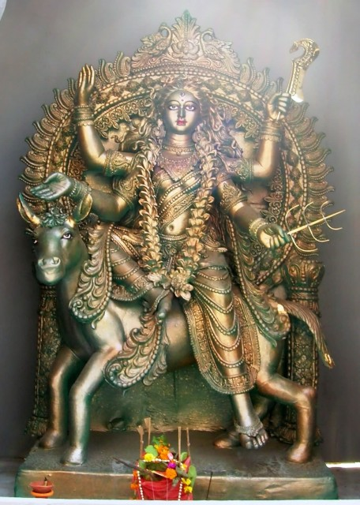

|
|||||
lordess sakthi
NAVA DURGA
KALARATRI
|
 |
|
The seventh
power of Goddess Durga isknown as Kalratri . Goddess
Kalaratri is like a dark black body with dark complexion,
that is why Goddess! Kalaratri is well known by name. Their
form is scary, their heads are scattered, round-rounds are
big three eyes, and Ardha Chandra is sitting on the head.
Goddess shines with shades of electricity in her arms and
throats, Devi Kalaratri is surrounded byfour arms. Devi Vaar
and Abhay Mudra display with both their right arm and hold
Khadga and loop power in the left arms. Goddess's vehicle is
a donkey, goddess rides a donkey. The horrific flames of
fire come out from the breathless nostrils of their
nostrils. Goddess kalaratri from the formIt appears to be
very fearful and terrible, but Goddess is always going to
provide auspicious results for the good-natured, and as a
result, their name 'Shubhankari' is also famous. |